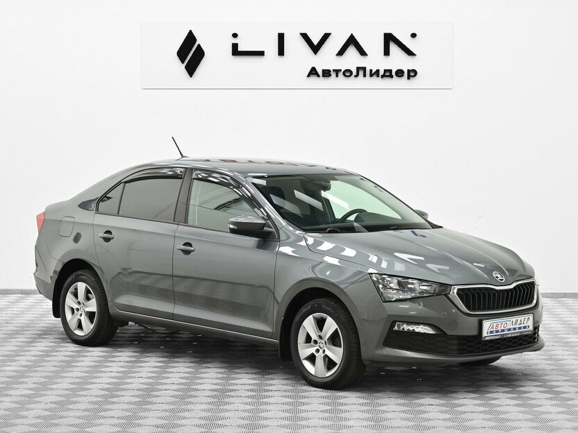

| # | Фото | Модель | Год | Пробег, км | Цена, ₽ | Δ к оценке · проверка | Влад. | Мой комментарий |
|---|---|---|---|---|---|---|---|---|
| — |
 |
Skoda RapidАвто.ру 1.6 MPI AT, 110 л.с. · II · Hockey Edition |
2021 | 58 000 | 1 445 000 |
−178 600 −11%, оценка Авто.ру
без ДТП (ГИБДД)не в розыскеПТС оригинал/электронный4 отметки о пробеге
|
1 | — |
| 9 |

|
Skoda RapidАвито 1.6 MPI AT, 110 л.с. · II (2019—2026) · Style |
2019 | 53 000 | 1 550 000 1 750 000 |
+115 000
≥1 ДТП, незнач.оригинал ПТСпробег реальный
|
3 | без проблем кроме 2019 года. машина совпадает с первым местом по категории |
| 10 |
.jpeg)
|
Skoda RapidАвито 1.6 MPI AT, 110 л.с. · II (2019—2026) · Ambition |
2019 | 53 000 | 1 530 000 |
−7 600
без ДТПоригинал ПТСбез окрасов (со слов)
|
1 | 2019 год. парктроник задний, вроде бы обогрев лобового ок, но старее и «ровно как был» возможно прокуренный |
| 13 |

|
Skoda RapidАвито 1.6 MPI AT, 110 л.с. · II (2019—2026) · Ambition |
2021 | 67 500 | 1 600 000 |
−18 500
без ДТПесть ограничения на рег.
|
2 | МИМО вроде ок, дырка в переднем сиденьи? черный цвет для рапида непривычен :) |
| 1 |
.jpeg)
|
Volkswagen PoloАвто.ру 1.6 AT, 110 л.с. · VI · Respect |
2021 | 67 600 | 1 570 000 1 750 000 |
−52 800
≥1 ДТП, незнач.царапина на заднем бампере
|
1 | вроде ок, но мало фоток и описание короткое, потенциал есть |
| 6 |

|
Skoda RapidАвто.ру 1.6 AT, 110 л.с. · II · Style |
2021 | 69 680 | 1 590 000 1 740 000 |
+108 700
≥1 ДТП, незнач.ТО каждый год, сервисная книжка
|
3 | внешне без проблем |
| 3 |

|
Volkswagen PoloАвито 1.6 MPI AT, 110 л.с. · VI (2020—2023) · Football Edition |
2020 | 71 000 | 1 550 000 1 650 000 |
−400
без ДТПрозыск/ограничения не проверены4 размещения на Авито
|
3 | внешне без проблем |
| 8 |

|
Volkswagen PoloАвто.ру 1.6 AT, 110 л.с. · VI · Respect |
2021 | 75 455 | 1 550 000 1 800 000 |
−65 100
≥1 ДТП, незнач.Автотека: 77 406 км
|
1 | возможно прокуренный красный салон — не очень :( |
| 7 |

|
Skoda RapidДром 1.6 MPI AT Ambition · 2 поколение |
2020 | 88 000 | 1 575 000 1 615 000 |
+113 400
≥1 ДТП, незнач.дубль на Авито за 1 525 000
|
3 | черные диски, мало фоток :( |
| 2 |

|
Volkswagen PoloАвито 1.6 MPI AT, 110 л.с. · VI (2020—2023) · Exclusive |
2020 | 90 000 | 1 590 000 1 600 000 |
+48 900
без ДТПв родном окрасе (со слов)видеообзор
|
2 | комплектация хорошая |
| 11 |

|
Volkswagen PoloАвито 1.6 MPI AT, 110 л.с. · VI (2020—2023) · Respect |
2021 | 93 000 | 1 600 000 1 650 000 |
+96 600
без ДТПвмятина на переднем крыле
|
1 | мало фоток, не понятно, темно |
| 5 |

|
Volkswagen PoloДром 1.6 MPI AT Status · 6 поколение |
2020 | 95 380 | 1 480 000 1 650 000 |
+55 800
≥1 ДТП, незнач.от офиц. дилера (со слов)
|
2 | Комплектация хорошая. 4 дтп |
| 14 |

|
Skoda RapidДром 1.6 MPI AT Style · 2 поколение |
2021 | 115 000 | 1 570 000 1 690 000 |
+63 700
без ДТПАвтотека: 113 800 кмновые диски и резина
|
2 | МИМО чехлы на сиденья, 17-е диски (низкий профиль / ямы) — минусы, уберём из рассмотрения |
| 12 |

|
Volkswagen PoloАвто.ру 1.6 AT, 110 л.с. · VI · Respect |
2021 | 118 800 | 1 380 000 1 600 000 |
−11 700
≥1 ДТП, незнач.дилерский, 1 собственник
|
1 | МИМО чехлы на сиденья, дтп :-( |
| 4 |

|
Volkswagen PoloАвито 1.6 MPI AT, 110 л.с. · VI (2020—2023) · Status |
2021 | 126 000 | 1 470 000 1 490 000 |
−3 500
без ДТПсалон «Алексей Авто», 154 отзыва
|
1 | внешне никаких проблем, но пробег большой |